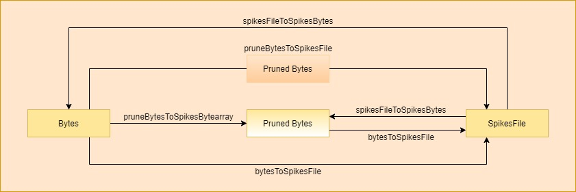

Data conversion functions
This section shows the different conversion functions used in AERzip. As with the compression functions, there is a picture showing the functions needed to convert a data type into another, in the context of uncompressed data.
There is the list of conversion functions:
- AERzip.conversionFunctions.bytesToSpikesFile(bytes_data, address_size, timestamp_size, verbose=True)
Converts a bytearray of raw spikes of a-bytes addresses and b-bytes timestamps, where a and b are address_size and timestamp_size parameters respectively, to a SpikesFile of raw spikes of the same shape.
- Parameters:
bytes_data (bytearray): The input bytearray. It must contain raw spikes data (without headers). address_size (int): An int indicating the size of the addresses. timestamp_size (int): An int indicating the size of the timestamps. verbose (boolean): A boolean indicating whether or not debug comments are printed.
- Returns:
spikes_file (SpikesFile): The output SpikesFile object from pyNAVIS. It contains raw spikes shaped as the raw spikes of the input bytearray.
- Notes:
This function is the inverse of the spikesFileToBytes function.
- AERzip.conversionFunctions.checkBytes(bytes_data, address_size, timestamp_size)
Checks if the bytes_data input bytearray contains a whole number of spikes.
- Parameters:
bytes_data (bytearray): The input bytearray. It must contain raw spikes data (without headers). address_size (int): An int indicating the size of the addresses. timestamp_size (int): An int indicating the size of the timestamps.
- Returns:
True if bytes_data contains a whole number of spikes. Otherwise raise an exception.
- AERzip.conversionFunctions.constructStruct(address_size, timestamp_size)
Constructs a numpy data type to represent the data structure of a bytearray.
- Parameters:
address_size (int): An int indicating the size of the addresses. timestamp_size (int): An int indicating the size of the timestamps.
- Returns:
struct (type): A data type required to interpret a bytearray.
- AERzip.conversionFunctions.getBytesToPrune(settings)
Gets the minimum number of bytes needed for spikes addresses and timestamps representation based on the input settings.
- Parameters:
settings (MainSettings): A MainSettings object from pyNAVIS.
- Returns:
address_size (int): An int indicating the minimum number of bytes to represent the addresses. timestamp_size (int): An int indicating the minimum number of bytes to represent the timestamps.
- AERzip.conversionFunctions.pruneBytesToSpikesBytearray(bytes_data, settings, new_address_size, new_timestamp_size, verbose=True)
Converts a bytearray of raw spikes of a-bytes addresses and b-bytes timestamps to a bytearray of raw spikes of c-bytes addresses and d-bytes timestamps, where a is settings.address_size field, b is settings.timestamp_size field and c and d are the new sizes input parameters (the desired sizes).
- Parameters:
bytes_data (bytearray): The input bytearray. It must contain raw spikes data (without headers). settings (MainSettings): A MainSettings object from pyNAVIS. It must contain the address_size and timestamp_size fields. new_address_size (int): An int indicating the desired size of the addresses. new_timestamp_size (int): An int indicating the desired size of the timestamps. verbose (boolean): A boolean indicating whether or not debug comments are printed.
- Returns:
pruned_bytes (bytearray): The output bytearray. It contains raw spikes shaped as desired.
- Notes:
If a and b are equal to c and d respectively, output bytearray spikes will be of the same shape that input bytearray spikes.
- AERzip.conversionFunctions.pruneBytesToSpikesFile(bytes_data, settings, new_address_size, new_timestamp_size, verbose=True)
Converts a bytearray of raw spikes of a-bytes addresses and b-bytes timestamps to a SpikesFile of raw spikes of c-bytes addresses and d-bytes timestamps, where a is settings.address_size field, b is settings.timestamp_size field and c and d are the new sizes input parameters (the desired sizes).
- Parameters:
bytes_data (bytearray): The input bytearray. It must contain raw spikes data (without headers). settings (MainSettings): A MainSettings object from pyNAVIS. It must contain the address_size and timestamp_size fields. new_address_size (int): An int indicating the desired size of the addresses. new_timestamp_size (int): An int indicating the desired size of the timestamps. verbose (boolean): A boolean indicating whether or not debug comments are printed.
- Returns:
spikes_file (SpikesFile): The output SpikesFile object from pyNAVIS. It contains raw spikes shaped as desired.
- Notes:
If a and b are equal to c and d respectively, output SpikesFile spikes will be of the same shape that input bytearray spikes.
- AERzip.conversionFunctions.spikesFileToBytes(spikes_file, address_size, timestamp_size, verbose=True)
Converts a SpikesFile of raw spikes of a-bytes addresses and b-bytes timestamps, where a and b are address_size and timestamp_size parameters respectively, to a bytearray of raw spikes of the same shape.
- Parameters:
spikes_file (SpikesFile): The input SpikesFile object from pyNAVIS. It must contain raw spikes data (without headers). address_size (int): An int indicating the size of the addresses. timestamp_size (int): An int indicating the size of the timestamps. verbose (boolean): A boolean indicating whether or not debug comments are printed.
- Returns:
bytes_data (bytearray): The output bytearray. It contains raw spikes shaped as the raw spikes of the input SpikesFile.
- Notes:
This function is the inverse of the bytesToSpikesFile function.